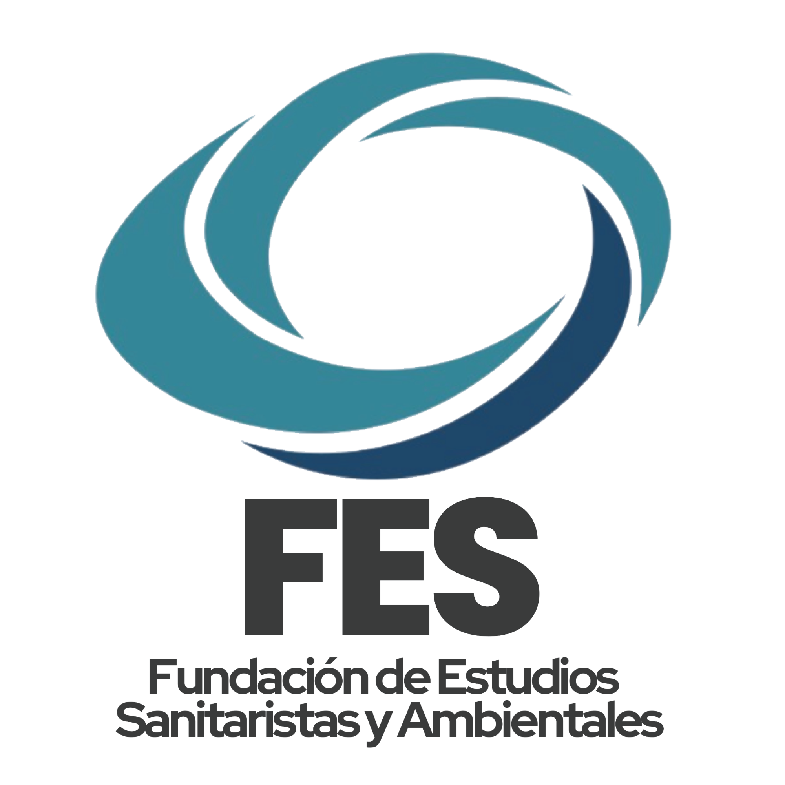

FESDesarrollo, innovación y conocimiento para abordar las problemáticas socioambientales.
Conocé másSomos una fundación enfocada en las problemáticas socioambientales desde una perspectiva social, abordando la desigualdad, la salud y el acceso a los recursos.
Desarrollo de políticas públicas y proyectos ambientales.
Formación técnica y profesional para trabajadores.
Difusión y acceso al conocimiento ambiental.
Contenido científico accesible para la sociedad.
Formación gratuita con certificación oficial y modalidad combinada.
Programa de divulgación con más de 15 años al aire.
FM 102.1 con contenidos ambientales y sociales.